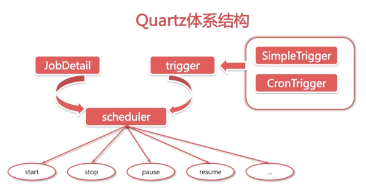
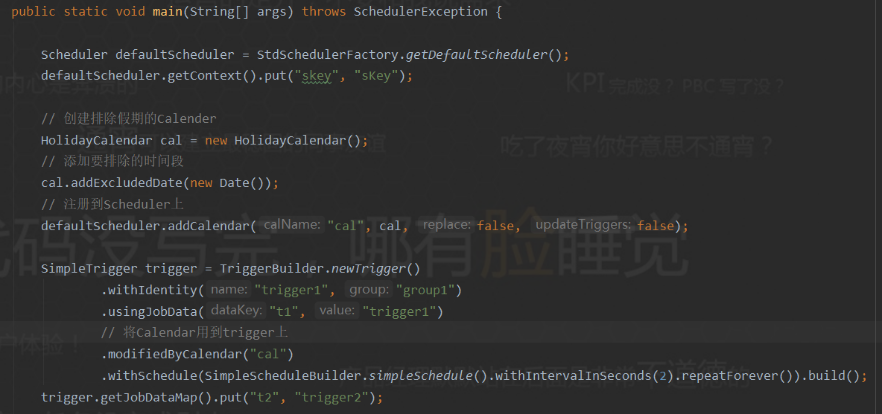
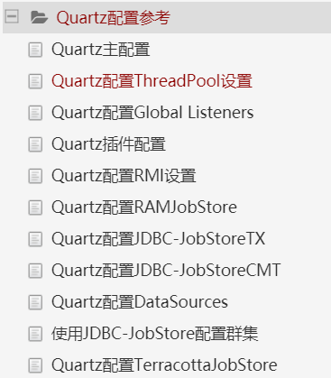

view code
public static void main(String[] args) throws SchedulerException {
Scheduler defaultScheduler = StdSchedulerFactory.getDefaultScheduler();
defaultScheduler.getContext().put("skey", "sKey");
SimpleTrigger trigger = TriggerBuilder.newTrigger()
.withIdentity("trigger1", "group1")
.usingJobData("t1", "trigger1")
.withSchedule(SimpleScheduleBuilder.simpleSchedule().withIntervalInSeconds(3).repeatForever()).build();
trigger.getJobDataMap().put("t2", "trigger2");
JobDetail job = JobBuilder.newJob(HelloJob.class)
.withIdentity("job1", "group1")
.usingJobData("j1", "job1")
.usingJobData("j2", "job2").build();
defaultScheduler.scheduleJob(job, trigger);
defaultScheduler.start();
}
@Slf4j
public class HelloJob implements Job {
@Override
public void execute(JobExecutionContext context) throws JobExecutionException {
log.info("j1:{}",context.getJobDetail().getJobDataMap().get("j1"));
log.info("j2:{}",context.getJobDetail().getJobDataMap().get("j2"));
log.info("t1:{}",context.getTrigger().getJobDataMap().get("t1"));
log.info("t2:{}",context.getTrigger().getJobDataMap().get("t2"));
Object skey = null;
try {
skey = context.getScheduler().getContext().get("skey");
} catch (SchedulerException e) {
e.printStackTrace();
}
log.info("skey: {}", skey);
log.info(LocalDateTime.now().toString());
}
}
view code
@Slf4j
public class HelloJob implements Job {
// 先定义好属性名
String t1;
String t2;
String j1;
String j2;
// 无参构造不能少，不然就不能构造job
public HelloJob() {}
@Override
public void execute(JobExecutionContext context) throws JobExecutionException {
log.info("j1:{}",context.getJobDetail().getJobDataMap().get("j1"));
log.info("j2:{}",context.getJobDetail().getJobDataMap().get("j2"));
log.info("t1:{}",context.getTrigger().getJobDataMap().get("t1"));
log.info("t2:{}",context.getTrigger().getJobDataMap().get("t2"));
log.info("合并后的map:{}",context.getMergedJobDataMap());
log.info("-------------------------------------------------------");
log.info("jobKey:{}",context.getJobDetail().getKey());
log.info("注入的值:t1: {},t2: {},j1: {},j2: {},",t1, t2, j1, j2);
log.info("-------------------------------------------------------");
Object skey = null;
try {
skey = context.getScheduler().getContext().get("skey");
} catch (SchedulerException e) {
e.printStackTrace();
}
log.info("skey: {}", skey);
log.info(LocalDateTime.now().toString());
}
// 设置属性的set方法
public void setT1(String t1) {
this.t1 = t1;
}
public void setT2(String t2) {
this.t2 = t2;
}
public void setJ1(String j1) {
this.j1 = j1;
}
public void setJ2(String j2) {
this.j2 = j2;
}
}

LocalDateTime of = LocalDateTime.of(2021, 01, 18, 15, 33, 0);
Date from = Date.from(of.atZone(ZoneId.systemDefault()).toInstant());
SimpleTrigger trigger = (SimpleTrigger) TriggerBuilder.newTrigger()
.withIdentity("trigger1", "group1")
.startAt(from) // 设置开始时间
.forJob("job1", "group1")
.build();
SimpleTrigger trigger = TriggerBuilder.newTrigger()
.withIdentity("trigger1", "group1")
// 设置开始时间，15后开始执行
.startAt(futureDate(15, DateBuilder.IntervalUnit.SECOND))
// 五秒执行一次，重复8次
.withSchedule(SimpleScheduleBuilder.simpleSchedule().withIntervalInSeconds(5).withRepeatCount(8))
.forJob("job1", "group1")
.build();
SimpleTrigger trigger = TriggerBuilder.newTrigger()
.withIdentity("trigger1", "group1")
.withSchedule(SimpleScheduleBuilder.simpleSchedule().withIntervalInSeconds(5).repeatForever())
.endAt(dateOf(15, 58, 0))
.build();
SimpleTrigger trigger = TriggerBuilder.newTrigger()
.withIdentity("trigger1", "group1")
.startAt(evenMinuteDate(null))
.withSchedule(SimpleScheduleBuilder.simpleSchedule().withIntervalInSeconds(5).repeatForever())
.build();
MISFIRE_INSTRUCTION_IGNORE_MISFIRE_POLICY
MISFIRE_INSTRUCTION_FIRE_NOW
MISFIRE_INSTRUCTION_RESCHEDULE_NOW_WITH_EXISTING_REPEAT_COUNT
MISFIRE_INSTRUCTION_RESCHEDULE_NOW_WITH_REMAINING_REPEAT_COUNT
MISFIRE_INSTRUCTION_RESCHEDULE_NEXT_WITH_REMAINING_COUNT
MISFIRE_INSTRUCTION_RESCHEDULE_NEXT_WITH_EXISTING_COUNT
// 设置trigger的错过触发策略
SimpleTrigger trigger = TriggerBuilder.newTrigger()
.withIdentity("trigger1", "group1")
.withSchedule(SimpleScheduleBuilder.simpleSchedule()
.withIntervalInSeconds(5)
.repeatForever()
.withMisfireHandlingInstructionNextWithExistingCount())
.build();
CronTrigger trigger = TriggerBuilder.newTrigger()
.withIdentity("trigger1", "group1")
.withSchedule(CronScheduleBuilder.cronSchedule("*/3 * 8-17 * * ?"))
.build();
CronTrigger trigger = TriggerBuilder.newTrigger()
.withIdentity("trigger1", "group1")
.withSchedule(dailyAtHourAndMinute(16, 57))
.forJob("job1", "group1")
.build();
CronTrigger trigger = TriggerBuilder.newTrigger()
.withIdentity("trigger1", "group1")
.withSchedule(weeklyOnDayAndHourAndMinute(DateBuilder.MONDAY, 17, 8))
.forJob("job1", "group1")
.build();
MISFIRE_INSTRUCTION_IGNORE_MISFIRE_POLICY
MISFIRE_INSTRUCTION_DO_NOTHING
MISFIRE_INSTRUCTION_FIRE_NOW
CronTrigger trigger = TriggerBuilder.newTrigger()
.withIdentity("trigger1", "group1")
.withSchedule(weeklyOnDayAndHourAndMinute(DateBuilder.MONDAY, 17, 8)
.withMisfireHandlingInstructionFireAndProceed()) // 配置错过触发
.forJob("job1", "group1")
.build();
scheduler.getListenerManager().addJobListener(myJobListener, jobKeyEquals(jobKey("myJobName", "myJobGroup")));
scheduler.getListenerManager().addJobListener(myJobListener, jobGroupEquals("myJobGroup"));
scheduler.getListenerManager().addJobListener(myJobListener, or(jobGroupEquals("myJobGroup"), jobGroupEquals("yourGroup")));
scheduler.getListenerManager().addJobListener(myJobListener, allJobs());
scheduler.getListenerManager().addSchedulerListener(mySchedListener);
scheduler.getListenerManager().removeSchedulerListener(mySchedListener);
org.quartz.jobStore.class: org.quartz.simpl.RAMJobStore
#配置Quartz以使用JobStoreTx
org.quartz.jobStore.class = org.quartz.impl.jdbcjobstore.JobStoreTX
# 配置JDBCJobStore以使用DriverDelegate,DriverDelegate负责执行特定数据库可能需要的任何JDBC工作。常用StdJDBCDelegate
org.quartz.jobStore.driverDelegateClass = org.quartz.impl.jdbcjobstore.StdJDBCDelegate
# 使用表前缀配置JDBCJobStore
org.quartz.jobStore.tablePrefix = QRTZ_
#使用要使用的DataSource的名称配置JDBCJobStore
org.quartz.jobStore.dataSource = myDS
#线程管理
#线程池实现
org.quartz.threadPool.class = org.quartz.simpl.SimpleThreadPool
#线程池数量
org.quartz.threadPool.threadCount = 50
#线程优先级
org.quartz.threadPool.threadPriority = 5
org.quartz.threadPool.threadsInheritContextClassLoaderOfInitializingThread = true

// 指定任务名称
org.quartz.scheduler.instanceName
// 指定任务id必须唯一可以设置成AUTO表示自动生成，或者SYS_PROP，从系统获取
org.quartz.scheduler.instanceId
// 是要使用的ThreadPool实现的名称，一般用这个org.quartz.simpl.SimpleThreadPool
org.quartz.threadPool.class
// 配置可用于并发执行的线程数
org.quartz.threadPool.threadCount
// 线程优先级，默认为5
org.quartz.threadPool.threadPriority
// 设置是否是守护线程，默认为false
org.quartz.threadPool.makeThreadsDaemons
// 在自定义线程池
org.quartz.threadPool.class = com.mycompany.goo.FooThreadPool
org.quartz.threadPool.somePropOfFooThreadPool = someValue
org.quartz.triggerListener.NAME.class = com.foo.MyListenerClass
org.quartz.triggerListener.NAME.propName = propValue
org.quartz.triggerListener.NAME.prop2Name = prop2Value
org.quartz.jobListener.NAME.class = com.foo.MyListenerClass
org.quartz.jobListener.NAME.propName = propValue
org.quartz.jobListener.NAME.prop2Name = prop2Value
org.quartz.plugin.NAME.class = com.foo.MyPluginClass
org.quartz.plugin.NAME.propName = propValue
org.quartz.plugin.NAME.prop2Name = prop2Value
org.quartz.plugin.triggHistory.class = \
org.quartz.plugins.history.LoggingTriggerHistoryPlugin
org.quartz.plugin.triggHistory.triggerFiredMessage = \
Trigger \{1\}.\{0\} fired job \{6\}.\{5\} at: \{4, date, HH:mm:ss MM/dd/yyyy}
org.quartz.plugin.triggHistory.triggerCompleteMessage = \
Trigger \{1\}.\{0\} completed firing job \{6\}.\{5\} at \{4, date, HH:mm:ss MM/dd/yyyy\}.
org.quartz.jobStore.class = org.quartz.simpl.RAMJobStore
// 默认值为60s，在被认为“misfired”之前，调度程序将“tolerate”一个Triggers将其下一个启动时间通过的毫秒数
org.quartz.jobStore.misfireThreshold
// 通过这个属性来设置JobStoreTX
org.quartz.jobStore.class = org.quartz.impl.jdbcjobstore.JobStoreTX
org.quartz.jobStore.class = org.quartz.impl.jdbcjobstore.JobStoreCMT
// 代表不同数据库的方言，一般配置这个，用于完全符合JDBC的驱动程序
org.quartz.jobStore.driverDelegateClass = org.quartz.impl.jdbcjobstore.StdJDBCDelegate
// 配置表前缀，
org.quartz.jobStore.tablePrefix
// 设置quartz是否是集群
org.quartz.jobStore.isClustered
/**
* 必须是在“LOCKS”表中选择一行并在该行上放置一个锁的SQL字符串。如果未设置，
* 默认值为“SELECT * FROM {0} LOCKS WHERE SCHED_NAME = {1} AND LOCK_NAME =？FOR UPDATE“，
* 适用于大多数数据库。在运行时使用上面配置的TABLE_PREFIX替换“{0}”。“{1}”被替换为调度程序的名称。
** /
org.quartz.jobStore.selectWithLockSQL
#============================================================================
# Configure Main Scheduler Properties
#============================================================================
org.quartz.scheduler.instanceName = MyClusteredScheduler
org.quartz.scheduler.instanceId = AUTO
#============================================================================
# Configure ThreadPool
#============================================================================
org.quartz.threadPool.class = org.quartz.simpl.SimpleThreadPool
org.quartz.threadPool.threadCount = 25
org.quartz.threadPool.threadPriority = 5
#============================================================================
# Configure JobStore
#============================================================================
org.quartz.jobStore.misfireThreshold = 60000
org.quartz.jobStore.class = org.quartz.impl.jdbcjobstore.JobStoreTX
org.quartz.jobStore.driverDelegateClass = org.quartz.impl.jdbcjobstore.oracle.OracleDelegate
org.quartz.jobStore.useProperties = false
org.quartz.jobStore.dataSource = myDS
org.quartz.jobStore.tablePrefix = QRTZ_
org.quartz.jobStore.isClustered = true
org.quartz.jobStore.clusterCheckinInterval = 20000
#============================================================================
# Configure Datasources
#============================================================================
org.quartz.dataSource.myDS.driver = oracle.jdbc.driver.OracleDriver
org.quartz.dataSource.myDS.URL = jdbc:oracle:thin:@polarbear:1521:dev
org.quartz.dataSource.myDS.user = quartz
org.quartz.dataSource.myDS.password = quartz
org.quartz.dataSource.myDS.maxConnections = 5
org.quartz.dataSource.myDS.validationQuery=select 0 from dual
public class SampleJob implements Job {
@Override
public void execute(JobExecutionContext context) throws JobExecutionException {
// 业务逻辑
System.out.println(LocalDateTime.now().format(DateTimeFormatter.ofPattern("yyyy-MM-dd HH:mm:ss")));
}
}
spring:
datasource:
type: com.alibaba.druid.pool.DruidDataSource
druid:
driver-class-name: com.mysql.cj.jdbc.Driver
url: jdbc:mysql://192.168.0.189:3306/demo?useUnicode=true&characterEncoding=utf8&zeroDateTimeBehavior=convertToNull&allowMultiQueries=true&serverTimezone=PRC&useSSL=false&autoReconnect=true
username: root
password: root
quartz:
job-store-type: jdbc
jdbc:
initialize-schema: embedded
properties:
org:
quartz:
scheduler:
instanceName: MyScheduler
instanceId: AUTO
jobStore:
class: org.quartz.impl.jdbcjobstore.JobStoreTX
driverDelegateClass: org.quartz.impl.jdbcjobstore.StdJDBCDelegate
tablePrefix: qrtz_
isClustered: true
clusterCheckinInterval: 10000
useProperties: false
threadPool:
class: org.quartz.simpl.SimpleThreadPool
threadCount: 10
threadPriority: 5
threadsInheritContextClassLoaderOfInitializingThread: true
@Service
public class QuartzService {
public void test() throws SchedulerException {
Scheduler scheduler = StdSchedulerFactory.getDefaultScheduler();
JobDetail jobDetail = JobBuilder.newJob(QuartzJob.class)
.withIdentity("job1", "group1")
.usingJobData("jobData1", "asdf")
.storeDurably()
.build();
CronTrigger trigger = TriggerBuilder.newTrigger()
.withIdentity("trigger1", "group1")
.forJob("job1", "group1")
.usingJobData("t1", "qwer")
.startNow()
.withSchedule(CronScheduleBuilder.cronSchedule("*/1 * * * * ?"))
.build();
SimpleTrigger trigger1 = TriggerBuilder.newTrigger()
.withIdentity("trigger2", "group1")
.forJob("job1", "group1")
.usingJobData("t2", "qwer2")
.withSchedule(SimpleScheduleBuilder.simpleSchedule().withIntervalInSeconds(3).repeatForever())
.build();
scheduler.scheduleJob(jobDetail, trigger);
scheduler.scheduleJob(trigger1);
scheduler.start();
}
}